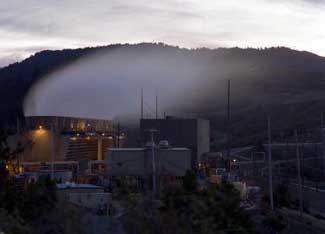

With fossil fuel prices escalating and countries searching for ways to reduce oil dependence and greenhouse gas emissions, capturing the earth’s heat for power generation is garnering new attention. First begun in Larderello, Italy, in 1904, electricity generation using geothermal energy is now taking place in 24 countries, five of which use it to produce 15 percent or more of their total electricity. In the first half of 2008, total world installed geothermal power capacity passed 10,000 megawatts and now produces enough electricity to meet the needs of 60 million people, roughly the population of the United Kingdom. In 2010, capacity could increase to 13,500 megawatts across 46 countries - equivalent to 27 coal-fired power plants.
Originating from the earth’s core and from the decay of naturally occurring isotopes such as those of uranium, thorium, and potassium, the heat energy in the uppermost six miles of the planet’s crust is vast - 50,000 times greater than the energy content of all oil and natural gas resources. Chile, Peru, Mexico, the United States, Canada, Russia, China, Japan, the Philippines, Indonesia, and other countries along the Ring of Fire (an area of high volcanic activity encircling the basin of the Pacific Ocean) are rich in geothermal energy. Another geothermal hot spot is the Great Rift Valley of Africa, which includes such countries as Kenya and Ethiopia. Worldwide, 39 countries with a cumulative population of over 750 million people have geothermal resources sufficient to meet all their electricity needs. (See data.)
Typically, power generation using the earth’s heat required underground pockets of high-temperature water or steam to drive a steam turbine. Now, new technologies that use liquids with low boiling points in closed-loop heat exchange systems allow electricity to be generated at much lower temperatures. This breakthrough is making geothermal power generation viable in countries such as Germany that are not known for their geothermal resources and is one reason why the number of countries using the earth’s heat to generate electricity could almost double by 2010.
One advantage of geothermal power plants, beyond the benefit of producing electricity from a low-carbon, indigenous energy source with no fuel costs, is that they provide baseload power 24 hours a day. Storage or backup-power is not required.
The United States leads the world in generating electricity from the earth’s heat. As of August 2008, geothermal capacity in the United States totaled nearly 2,960 megawatts across seven states - Alaska, California, Hawaii, Idaho, Nevada, New Mexico, and Utah. California, with 2,555 megawatts of installed capacity - more than any country in the world - produces almost 5 percent of its electricity from geothermal energy. Most of this capacity is installed in an area called the Geysers, a geologically active region north of San Francisco.
Thanks to the Energy Policy Act of 2005, which made geothermal power generation eligible to receive the federal renewable energy production tax credit, electricity generated from geothermal resources now costs the same as fossil-fuel-based electricity in many markets in the western United States. With favorable economics, the geothermal industry is experiencing a surge in activity. As of August 2008, some 97 confirmed new geothermal power projects with up to 4,000 megawatts of capacity were under development in 13 states, with some 550 megawatts of this already in the construction phase. Expected to create 7,000 permanent full-time jobs, the new capacity will include numerous large-scale projects such as the 350-megawatt and 245-megawatt projects by Vulcan Power near Salt Wells and Aurora, Nevada; the 155-megawatt project by CalEnergy near the Salton Sea in southern California; and the 120-megawatt project by Davenport Power near the Newberry Volcano in Oregon.
Current development is only scratching the surface of what is possible. The U.S. Department of Energy estimates that with emerging low-temperature technologies, at least 260,000 megawatts of U.S. geothermal resources could be developed. A study led by the Massachusetts Institute of Technology indicates that an investment of roughly $1 billion in geothermal research and development over 15 years (roughly the cost of a single new coal-fired power plant) could lead to commercial deployment of 100,000 megawatts by 2050.
In Europe, the top countries in geothermal energy development are Italy with 810 megawatts and Iceland with 420 megawatts. Italy is expected to nearly double its installed capacity by 2020. Iceland, with 27 percent of its electricity needs met by harnessing the earth’s heat, is number one in the world in the share of its electricity generated from geothermal energy. Germany, with only 8 megawatts of installed capacity, lags behind but is beginning to see the effects of a feed-in tariff of €0.15 (US $0.23) per kilowatt-hour that was implemented in 2004. Almost 150 plants are now in the pipeline in Germany, with most of the activity centered in Bavaria.
Ten of the top 15 countries producing geothermal electricity are in the developing world. The Philippines, which generates 23 percent of its electricity from geothermal energy, is the world’s second biggest producer behind the United States. The Philippines aims to increase its installed geothermal capacity by 2013 by more than 60 percent, to 3,130 megawatts. Indonesia, the world’s third largest producer, has even bigger plans, calling for 6,870 megawatts of new geothermal capacity to be developed over the next 10 years - equal to nearly 30 percent of its current electricity-generating capacity from all sources. Pertamina, the Indonesian state petroleum company, anticipates building most of this new capacity - adding its name to the list of conventional energy companies that are beginning to diversify into the renewable energy market.
The geothermal development potential of the Great Rift Valley in Africa is enormous. Kenya is the frontrunner in the effort to tap this potential. In late June 2008, President Mwai Kibaki announced a plan to install some 1,700 megawatts of new geothermal capacity within 10 years - 13 times greater than the current capacity and one-and-a-half times greater than the country’s total electricity generating capacity from all sources. Djibouti, aided by Reykjavik Energy Invest’s commitment to provide $150 million for geothermal energy projects in Africa, aims to tap the earth’s heat to produce nearly all of its electricity within the next few years. Further stimulating development is the African Rift Geothermal Development Facility (ARGeo), an international organization partly funded by the World Bank that seeks to increase the use of geothermal energy in the Great Rift Valley by protecting investors from losses during early stages of development.
Industry, which accounts for more than 30 percent of world energy consumption, is also starting to turn to reliable, low-cost geothermal energy. In Papua New Guinea, a 56-megawatt geothermal power station owned by Lihir Gold Limited, a leading global gold company, meets 75 percent of corporate power demand at a notably lower cost than oil-fired power generation. In Iceland, five geothermal power plants planned near Reykjavik, which are slated to have a total capacity of 225 megawatts when completed in 2012, will provide electricity to new aluminum refineries.
Despite development potential measured in the hundreds of thousands of megawatts, tapping this renewable source of power is still in its infancy. But as more and more national leaders begin to see renewable energy as a cost-effective, low-carbon alternative to price-volatile, carbon-intensive fossil fuels, geothermal power generation is expected to move rapidly from marginal to mainstream.
|
 Courtesy NREL/DOE/David Parsons With a 750-megawatt output from 14 units, The Geysers is the largest producer of geothermal power in the world. |
|
|